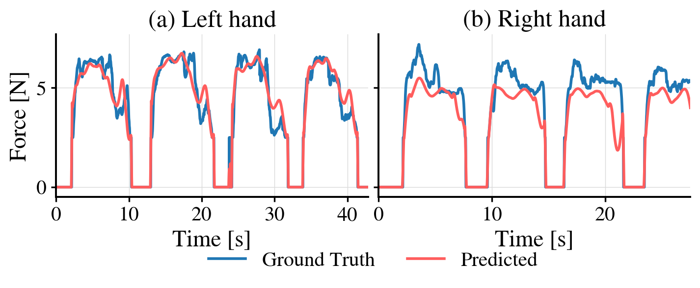

Pillow Reorientation
Framework

Whole-Body Tactile UMI for Force-Supervised Humanoid Manipulation
In submission
Whole-body humanoid manipulation of bulky, deformable, and shared load objects requires distributed contact sensing and explicit force regulation, yet most imitation policies treat contact force only implicitly. Demonstration sources provide complementary modalities with inherent trade-offs: human demonstra tions capture natural contact forces but not robot-executable actions, while teleop eration directly records robot actions but with less natural force regulation. This paper presents WT-UMI, a wearable whole-body tactile interface worn by human demonstrators or mounted on humanoids, providing accurate observations of tactile images, contact forces, and end-effector poses across both collection modes. We introduce a force-conditioned target-pose correction module that con verts measured human hand trajectories into contact-aware robot targets through learned corrections from measured tactile, pose, and force inputs, and a force supervised planner that predicts end-effector pose chunks and contact-force tra jectories. The predicted contact force serves as the reference for a tactile-based admittance controller. Across five contact-rich tasks spanning deformable objects, bulky rigid objects, and human–humanoid collaboration, WT-UMI improves success rate and reduces contact-position tracking error over four policy baselines.


| Source | Force RMSE [N] | Lag [ms] | Force Rate RMS [N/s] | |
|---|---|---|---|---|
| Measured | Predicted | |||
| Human | 1.05 | 68 | 5.86 | 3.74 |
| Teleoperation | 2.07 | 151 | 30.62 | 19.80 |

| Metric | Raw Human | Raw Teleoperation | Human Correction | Human Correction + Admittance |
|---|---|---|---|---|
| Avg. Success Rate (%) ↑ | Failed | 85.35 | 89.29 | 96.15 |
| Motion Smoothness (m/s2) ↓ | — | 1.10 | 1.09 | 1.18 |
| Contact Drift (mm) ↓ | — | 18.60 | 18.69 | 12.47 |
| Contact Establishment Time (s) ↓ | — | 1.00 | 1.08 | 0.58 |
| Contact Lingering Time (s) ↓ | — | 0.12 | 0.10 | 0.14 |
| Policy | Task | Succ. Rate (%) ↑ | Cont. Drift (mm) ↓ | Cont. Force (N) | Smooth.-Trans. (m/s2) ↓ | Smooth.-Rot. (rad/s2) ↓ | |||||
|---|---|---|---|---|---|---|---|---|---|---|---|
| Admi. (Ours) → | w/o | w/ | w/o | w/ | w/o | w/ | w/o | w/ | w/o | w/ | |
| ViT-FMT | T1 | 100 | 100 | 18.12 | 15.67 | 4.77 | 5.50 | 3.14 | 2.98 | 20.29 | 18.56 |
| T2 | 100 | 100 | 21.04 | 19.44 | 0.52 | 0.13 | 1.87 | 1.95 | 12.63 | 13.61 | |
| T3 | 80 | 92 | 25.00 | 22.08 | 0.96 | 1.61 | 1.85 | 1.29 | 14.05 | 10.38 | |
| ViT-DiT | T1 | 52 | 52 | 21.79 | 18.00 | 2.21 | 2.57 | 2.92 | 2.54 | 18.73 | 14.97 |
| T2 | 100 | 100 | 21.22 | 19.61 | 0.19 | 0.76 | 4.67 | 2.41 | 25.93 | 15.17 | |
| T3 | 52 | 52 | 26.22 | 22.20 | 1.74 | 0.93 | 2.33 | 2.05 | 16.47 | 14.79 | |
| π0.5 | T1 | 88 | 92 | 21.51 | 11.78 | 2.53 | 2.80 | 4.69 | 4.82 | 29.33 | 29.79 |
| T2 | 68 | 76 | 19.78 | 15.97 | 0.50 | 0.50 | 5.06 | 5.03 | 31.86 | 31.22 | |
| T3 | 84 | 76 | 20.18 | 19.40 | 2.57 | 3.38 | 4.11 | 3.53 | 27.26 | 23.56 | |
| Ψ0 | T1 | 88 | 92 | 15.80 | 13.56 | 3.14 | 3.03 | 4.20 | 3.27 | 27.06 | 23.01 |
| T2 | 89 | 96 | 20.48 | 18.69 | 2.50 | 2.50 | 4.94 | 5.44 | 32.12 | 33.04 | |
| T3 | 0 | 0 | – | – | – | – | – | – | – | – | |
Admittance ablation across all policy backbones over tasks T1 (Yogaball), T2 (Pillow), and T3 (Bucket). Each metric is evaluated without (w/o) and with (w/) our admittance control. The better or tied value is bolded for success rate, contact drift, and motion smoothness.
@article{wtumi2026,
title={WT-UMI: Whole-Body Tactile UMI for Force-Supervised Humanoid Manipulation},
author={Anonymous},
journal={arXiv preprint arXiv:2606.13232},
year={2026}
}